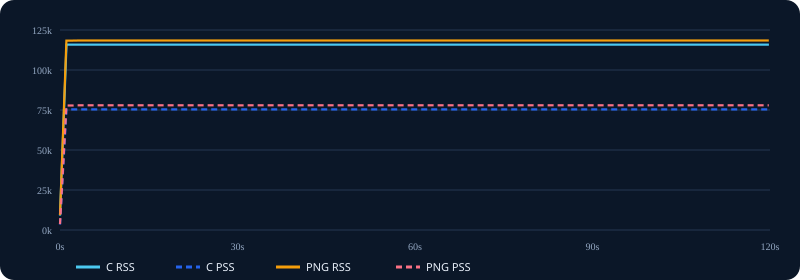

总存储变化
−1.33 MiB
可执行文件 + 30 个外部 PNG
| 计数器 | C 数组 | PNG | PNG 差异 |
|---|---|---|---|
| Task clock | 12,467.28 ms | 13,177.87 ms | +710.59 ms (+5.70%) |
| 平均 CPU 占用 | 0.104 CPU | 0.110 CPU | +5.77% |
| 上下文切换 | 73,495 | 73,783 | +288 (+0.39%) |
| CPU 迁移 | 871 | 935 | +64 (+7.35%) |
| 缺页 | 13,809 | 16,373 | +2,564 (+18.57%) |
| Cycles / Instructions / IPC | PMU 不支持 | PMU 不支持 | 无法计算 |
| 分支与缓存失败率 | PMU 不支持 | PMU 不支持 | 无法计算 |
C 数组采集 280 个样本，PNG 采集 299 个样本，均无丢失。以下为 self-time，采样量较小，适合定位方向而非微小差异。
4.64%3.21%3.21%2.14%1.79%1.79%4.01%3.34%2.68%2.34%2.01%2.01%采样热点中未出现 lodepng：在当前 2 MiB 解码缓存下，PNG 解码是短暂的一次性启动工作，30 秒稳态采样主要观察到绘制、SDL/llvmpipe 和内核调度。若要专门分析首次解码，应缩短启动采样窗口或使用探针。

| 峰值指标 | C 数组 | PNG | PNG 差异 |
|---|---|---|---|
| RSS | 115,876 KiB | 118,456 KiB | +2,580 KiB (+2.23%) |
| PSS | 75,392 KiB | 77,918 KiB | +2,526 KiB (+3.35%) |
| Private | 63,020 KiB | 65,540 KiB | +2,520 KiB (+4.00%) |
| Anonymous | 46,012 KiB | 50,164 KiB | +4,152 KiB (+9.02%) |
| VmSize | 1,608,632 KiB | 1,614,220 KiB | +5,588 KiB (+0.35%) |
| Swap | 0 KiB | 0 KiB | 0 |
两种模式约 1–3 秒后达到稳定平台，峰值与 10 秒后的稳态值基本一致。PSS/Private 显示 PNG 方案实际新增约 2.5 MiB 物理内存；Anonymous 增量更大，是因为它同时反映 LVGL 内存池中已经触碰的匿名页。
| 指标 | C 数组 | PNG | PNG 差异 |
|---|---|---|---|
| 用户态 CPU | 11.64 s | 11.85 s | +1.80% |
| 系统态 CPU | 2.63 s | 2.80 s | +6.46% |
| 总 CPU 时间 | 14.27 s | 14.65 s | +2.66% |
| CPU 利用率 | 11% | 12% | +1 百分点 |
| 峰值 RSS | 116,352 KiB | 118,784 KiB | +2.09% |
| 主缺页 | 0 | 0 | 0 |
| 次缺页 | 15,172 | 15,047 | −0.82% |
| 可执行文件 | 5,052,584 B | 3,427,440 B | −32.16% |
| 外部图片文件 | 0 B | 230,376 B | +230,376 B |
| 总存储 | 5,052,584 B | 3,657,816 B | −27.60% |
此前 +13.15% CPU 不能作为图片格式的最终结论。该轮包含逐条网络日志、两种模式接收的消息数量也不同；关闭日志后差异下降到 +2.66%，说明终端输出和不一致负载是主要干扰因素。
2 MiB 解码缓存有效。30 秒稳态热点中没有出现 lodepng，热点仍以 SDL/llvmpipe、内核调度和 LVGL 软件图片/颜色混合为主。这表明 PNG 解码主要发生在首次使用，缓存避免了背景图逐帧重复解码；当前数据不能量化首次解码延迟。
PNG 适合本模拟器及存储敏感场景。若可接受约 2.5 MiB 额外物理内存和约 3%–6% 稳态 CPU，PNG 能显著减小发布包，并让资源替换无需重新生成和编译 C 数组。若目标设备 RAM 很紧、要求确定性首次显示延迟或没有文件系统，则继续使用 C 数组更稳妥。
推荐保持当前 PNG 配置：UI_PNG_CACHE_SIZE=2097152，并在目标硬件压力测试后逐步下调 8 MiB LVGL 内存池。内存池只是容量上限，但已触碰匿名页会形成实际 RAM 成本。
剩余限制：当前运行于 SDL + Mesa llvmpipe 软件渲染环境；硬件 PMU 不支持，无法比较 IPC、缓存和分支失败率；多数场景为静态 UI 且每项只运行一次。最终决策前应在目标硬件上使用固定数据回放，执行至少 5 轮并比较中位数与 P95，同时单独测量冷启动首次解码时间。